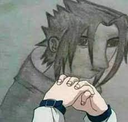
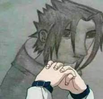

LaPatienceYT
mythes-mystères
Drax nous raconte les histoires et les légendes les plus insolites du monde humain !
Partie 1/2 - Page suivante

 Vous allez très probablement découvrir des créatures, personnages, lieux et divers moments qui restent de nos jours mystérieux...
Vous allez très probablement découvrir des créatures, personnages, lieux et divers moments qui restent de nos jours mystérieux... „ɪOui je connais
・Oui je connais
 „ɪNon ça ne me dit rien
„ɪNon ça ne me dit rien
 „ɪSeul le nom m'évoque quelque chose (edited) 139 2 5
„ɪSeul le nom m'évoque quelque chose (edited) 139 2 5 4
4 122
122 13
13 Chose promise, chose due : place aux explications ! (edited)
Chose promise, chose due : place aux explications ! (edited) 31
31") 29
29 ・Oui je connais
„ɪNon ça ne me dit rien
„ɪSeul le nom m'évoque quelque chose (edited) 98 14 13 4 100 14
・Oui je connais
„ɪNon ça ne me dit rien
„ɪSeul le nom m'évoque quelque chose (edited) 98 14 13 4 100 14
") 76 31 ・Oui je connais
„ɪNon ça ne me dit rien
„ɪSeul le nom m'évoque quelque chose (edited) 117 4 5 12 68 46
76 31 ・Oui je connais
„ɪNon ça ne me dit rien
„ɪSeul le nom m'évoque quelque chose (edited) 117 4 5 12 68 46") 69 27 „ɪOui je connais
„ɪNon ça ne me dit rien
„ɪSeul le nom m'évoque quelque chose 49 38 21 7 54 41
69 27 ・Oui je connais
„ɪNon ça ne me dit rien
„ɪSeul le nom m'évoque quelque chose 49 38 21 7 54 41") 60 41 „ɪOui je connais
„ɪNon ça ne me dit rien
„ɪSeul le nom m'évoque quelque chose 38 42 19 7 46 39
60 41 ・Oui je connais
„ɪNon ça ne me dit rien
„ɪSeul le nom m'évoque quelque chose 38 42 19 7 46 39") 56 40 „ɪOui je connais
„ɪNon ça ne me dit rien
„ɪSeul le nom m'évoque quelque chose 57 16 16 19 24 36
56 40 ・Oui je connais
„ɪNon ça ne me dit rien
„ɪSeul le nom m'évoque quelque chose 57 16 16 19 24 36") 54 22 39 21
9 ✅ 144 ❌ 53 ❔
- Personnage (Roi Midas & Auto-stoppeuse fantôme)
108 48 24
9 ✅ 116 ❌ 47 ❔
- Lieu (Triangle des Bermudes & Camelot)
132 17 16
17 ✅ 73 ❌ 67 ❔
Statistiquement parlant, vous avez une grande préférence sur les créatures et personnages légendaires, contrairement aux lieux qui ont eu une petite baisse de vote
De plus, la grande majorité ne croient pas aux mythes et légendes mentionnés, intéressant (edited)
54 22 39 21
9 ✅ 144 ❌ 53 ❔
- Personnage (Roi Midas & Auto-stoppeuse fantôme)
108 48 24
9 ✅ 116 ❌ 47 ❔
- Lieu (Triangle des Bermudes & Camelot)
132 17 16
17 ✅ 73 ❌ 67 ❔
Statistiquement parlant, vous avez une grande préférence sur les créatures et personnages légendaires, contrairement aux lieux qui ont eu une petite baisse de vote
De plus, la grande majorité ne croient pas aux mythes et légendes mentionnés, intéressant (edited) Ô∏è Sondage express sur le salon Ô∏è
️ Sondage express sur le salon ️ ・Continue ! j'apprends des choses dans ce salon
・Continue ! j'apprends des choses dans ce salon
 ・Garde tes points, les meilleurs choses ont une fin
・Garde tes points, les meilleurs choses ont une fin
 ・Sans opinion (edited) 62 5 2
・Sans opinion (edited) 62 5 2 34 ・Oui je connais
„ɪNon ça ne me dit rien
„ɪSeul le nom m'évoque quelque chose 78 4 3 10 63 11
34 ・Oui je connais
„ɪNon ça ne me dit rien
„ɪSeul le nom m'évoque quelque chose 78 4 3 10 63 11") 58 10 „ɪOui je connais
„ɪNon ça ne me dit rien
„ɪSeul le nom m'évoque quelque chose 79 2 3 10 65 9
58 10 ・Oui je connais
„ɪNon ça ne me dit rien
„ɪSeul le nom m'évoque quelque chose 79 2 3 10 65 9") 43 20 „ɪOui je connais
„ɪNon ça ne me dit rien
„ɪSeul le nom m'évoque quelque chose 8 58 7 3 30 33
43 20 ・Oui je connais
„ɪNon ça ne me dit rien
„ɪSeul le nom m'évoque quelque chose 8 58 7 3 30 33")
") 56 45
56 45 1
1 1
1 1
1 1
1 1
1 1
1 1 „ɪOui je connais
„ɪNon ça ne me dit rien
„ɪSeul le nom m'évoque quelque chose
Petite question assez spéciale à laquelle plusieurs personnes m'ont suppliés d'en parler, alors voici (edited) 84 3 12 (edited)
1 ・Oui je connais
„ɪNon ça ne me dit rien
„ɪSeul le nom m'évoque quelque chose
Petite question assez spéciale à laquelle plusieurs personnes m'ont suppliés d'en parler, alors voici (edited) 84 3 12 (edited)")
") 72 23 ・Oui je connais
„ɪNon ça ne me dit rien
„ɪSeul le nom m'évoque quelque chose 8 69 6 3 26 38
72 23 ・Oui je connais
„ɪNon ça ne me dit rien
„ɪSeul le nom m'évoque quelque chose 8 69 6 3 26 38")
") 55 49 ・Oui je connais
„ɪNon ça ne me dit rien
„ɪSeul le nom m'évoque quelque chose 81 2 4 12 66 8
55 49 ・Oui je connais
„ɪNon ça ne me dit rien
„ɪSeul le nom m'évoque quelque chose 81 2 4 12 66 8")
") 53 15
53 15 3 „ɪOui je connais
„ɪNon ça ne me dit rien
„ɪSeul le nom m'évoque quelque chose 71 2 5 14 49 6
3 ・Oui je connais
„ɪNon ça ne me dit rien
„ɪSeul le nom m'évoque quelque chose 71 2 5 14 49 6 21
21 7
7
")
") 37 19 ・Oui je connais
„ɪNon ça ne me dit rien
„ɪSeul le nom m'évoque quelque chose 67 3 1 6 57 5
37 19 ・Oui je connais
„ɪNon ça ne me dit rien
„ɪSeul le nom m'évoque quelque chose 67 3 1 6 57 5")
") 42 9 ・Oui je connais
„ɪNon ça ne me dit rien
„ɪSeul le nom m'évoque quelque chose 9 54 7 6 25 30
42 9 ・Oui je connais
„ɪNon ça ne me dit rien
„ɪSeul le nom m'évoque quelque chose 9 54 7 6 25 30") 57 47 „ɪOui je connais
„ɪNon ça ne me dit rien
„ɪSeul le nom m'évoque quelque chose 21 41 8 15 16 27
57 47 ・Oui je connais
„ɪNon ça ne me dit rien
„ɪSeul le nom m'évoque quelque chose 21 41 8 15 16 27")
") 58 38 ・Oui je connais
„ɪNon ça ne me dit rien
„ɪSeul le nom m'évoque quelque chose 70 3 3 8 63 3
58 38 ・Oui je connais
„ɪNon ça ne me dit rien
„ɪSeul le nom m'évoque quelque chose 70 3 3 8 63 3")
") 51 14 ・Oui je connais
„ɪNon ça ne me dit rien
„ɪSeul le nom m'évoque quelque chose 36 20 27 30 19 26
51 14 ・Oui je connais
„ɪNon ça ne me dit rien
„ɪSeul le nom m'évoque quelque chose 36 20 27 30 19 26")
") 55 40 ・Oui je connais
„ɪNon ça ne me dit rien
„ɪSeul le nom m'évoque quelque chose 77 2 1 2 72 2
55 40 ・Oui je connais
„ɪNon ça ne me dit rien
„ɪSeul le nom m'évoque quelque chose 77 2 1 2 72 2")
") 46 17 ・Oui je connais
„ɪNon ça ne me dit rien
„ɪSeul le nom m'évoque quelque chose 42 9 24 2 49 17
46 17 ・Oui je connais
„ɪNon ça ne me dit rien
„ɪSeul le nom m'évoque quelque chose 42 9 24 2 49 17")
") 50 29 ・Oui je connais
„ɪNon ça ne me dit rien
„ɪSeul le nom m'évoque quelque chose 11 61 5 3 22 41
50 29 ・Oui je connais
„ɪNon ça ne me dit rien
„ɪSeul le nom m'évoque quelque chose 11 61 5 3 22 41")
") 52 40 ・Oui je connais
„ɪNon ça ne me dit rien
„ɪSeul le nom m'évoque quelque chose 64 4 9 4 64 6
52 40 ・Oui je connais
„ɪNon ça ne me dit rien
„ɪSeul le nom m'évoque quelque chose 64 4 9 4 64 6")
") 51 30 ・Oui je connais
„ɪNon ça ne me dit rien
„ɪSeul le nom m'évoque quelque chose 68 2 2 8 54 5 (edited)
51 30 ・Oui je connais
„ɪNon ça ne me dit rien
„ɪSeul le nom m'évoque quelque chose 68 2 2 8 54 5 (edited)")
") 48 27 ・Oui je connais
„ɪNon ça ne me dit rien
„ɪSeul le nom m'évoque quelque chose 67 4 2 3 61 6
48 27 ・Oui je connais
„ɪNon ça ne me dit rien
„ɪSeul le nom m'évoque quelque chose 67 4 2 3 61 6")
") 39 16 ・Oui je connais
„ɪNon ça ne me dit rien
„ɪSeul le nom m'évoque quelque chose 65 5 2 26 22 21
39 16 ・Oui je connais
„ɪNon ça ne me dit rien
„ɪSeul le nom m'évoque quelque chose 65 5 2 26 22 21")
") 47 12 ・Oui je connais
„ɪNon ça ne me dit rien
„ɪSeul le nom m'évoque quelque chose 58 2 1 3 50 2
47 12 ・Oui je connais
„ɪNon ça ne me dit rien
„ɪSeul le nom m'évoque quelque chose 58 2 1 3 50 2")
") 43 16 ・Oui je connais
„ɪNon ça ne me dit rien
„ɪSeul le nom m'évoque quelque chose 56 2 5 10 35 20
43 16 ・Oui je connais
„ɪNon ça ne me dit rien
„ɪSeul le nom m'évoque quelque chose 56 2 5 10 35 20")
") 42 17 ・Oui je connais
„ɪNon ça ne me dit rien
„ɪSeul le nom m'évoque quelque chose 12 38 11 3 15 33
42 17 ・Oui je connais
„ɪNon ça ne me dit rien
„ɪSeul le nom m'évoque quelque chose 12 38 11 3 15 33")
") 47 37 ・Oui je connais
„ɪNon ça ne me dit rien
„ɪSeul le nom m'évoque quelque chose 8 51 4 4 15 38
47 37 ・Oui je connais
„ɪNon ça ne me dit rien
„ɪSeul le nom m'évoque quelque chose 8 51 4 4 15 38 37
37 14
14 14
14 6
6")
") 44 38 ・Oui je connais
„ɪNon ça ne me dit rien
„ɪSeul le nom m'évoque quelque chose 55 2 2 5 50 3
44 38 ・Oui je connais
„ɪNon ça ne me dit rien
„ɪSeul le nom m'évoque quelque chose 55 2 2 5 50 3 30
30 7
7 7 7
7 7 12
12 2
2")
") 47 22
47 22  29 22 14
29 22 14 12
„ɪQuel genre de légende appréciez vous ?„ɪ
12
„ɪQuel genre de légende appréciez vous ?„ɪ
 „ɪJ'aime tous les genres de légendes que tu as proposés
„ɪJ'ai une préférence sur les créatures et les personnages
„ɪJ'aime tous les genres de légendes que tu as proposés
„ɪJ'ai une préférence sur les créatures et les personnages
 „ɪJ'aime bien les lieux, ma culture en géo se développe
„ɪJ'aime bien les lieux, ma culture en géo se développe
 „ɪJe préfère les légendes urbaines ou des légendes flippantes 39 21 7 8
„ɪJe préfère les légendes urbaines ou des légendes flippantes 39 21 7 8  (edited) 16 Bravo à ceux qui ont réussi à le trouver !
Chacun a remporté 150 points de ma fortune personnelle, j'organiserai peut être un autre jeu de ce genre à l'avenir
(edited) 16 Bravo à ceux qui ont réussi à le trouver !
Chacun a remporté 150 points de ma fortune personnelle, j'organiserai peut être un autre jeu de ce genre à l'avenir  30 „ɪOui je connais
„ɪNon ça ne me dit rien
„ɪSeul le nom m'évoque quelque chose 50 11 3 5 45 8
30 ・Oui je connais
„ɪNon ça ne me dit rien
„ɪSeul le nom m'évoque quelque chose 50 11 3 5 45 8")
") 39 20 ・Oui je connais
„ɪNon ça ne me dit rien
„ɪSeul le nom m'évoque quelque chose (edited) 54 2 2 4 50 2
39 20 ・Oui je connais
„ɪNon ça ne me dit rien
„ɪSeul le nom m'évoque quelque chose (edited) 54 2 2 4 50 2")
") 37 22 ・Oui je connais
„ɪNon ça ne me dit rien
„ɪSeul le nom m'évoque quelque chose 51 2 2 18 19 16 (edited)
37 22 ・Oui je connais
„ɪNon ça ne me dit rien
„ɪSeul le nom m'évoque quelque chose 51 2 2 18 19 16 (edited)")
") 34 13 ・Oui je connais
„ɪNon ça ne me dit rien
„ɪSeul le nom m'évoque quelque chose 35 14 5 4 38 10
34 13 ・Oui je connais
„ɪNon ça ne me dit rien
„ɪSeul le nom m'évoque quelque chose 35 14 5 4 38 10")
") 33 18 ・Oui je connais
„ɪNon ça ne me dit rien
„ɪSeul le nom m'évoque quelque chose 4 36 5 3 11 23
33 18 ・Oui je connais
„ɪNon ça ne me dit rien
„ɪSeul le nom m'évoque quelque chose 4 36 5 3 11 23")
") 32 31 ・Oui je connais
„ɪNon ça ne me dit rien
„ɪSeul le nom m'évoque quelque chose 7 37 2 2 15 21
32 31 ・Oui je connais
„ɪNon ça ne me dit rien
„ɪSeul le nom m'évoque quelque chose 7 37 2 2 15 21")
") 36 22 ・Oui je connais
„ɪNon ça ne me dit rien
„ɪSeul le nom m'évoque quelque chose 52 2 2 3 48 4
36 22 ・Oui je connais
„ɪNon ça ne me dit rien
„ɪSeul le nom m'évoque quelque chose 52 2 2 3 48 4")
") 36 21 ・Oui je connais
„ɪNon ça ne me dit rien
„ɪSeul le nom m'évoque quelque chose 19 17 14 4 23 13Ô∏è
J'ai lu : ✅
J'ai appris quelque chose : (edited)
36 21 ・Oui je connais
„ɪNon ça ne me dit rien
„ɪSeul le nom m'évoque quelque chose 19 17 14 4 23 13Ô∏è
J'ai lu : ✅
J'ai appris quelque chose : (edited)")
") 37 22 ・Oui je connais
„ɪNon ça ne me dit rien
„ɪSeul le nom m'évoque quelque chose 49 2 1 4 41 2
37 22 ・Oui je connais
„ɪNon ça ne me dit rien
„ɪSeul le nom m'évoque quelque chose 49 2 1 4 41 2")
") 29 16 ・Oui je connais
„ɪNon ça ne me dit rien
„ɪSeul le nom m'évoque quelque chose (edited) 44 4 4 33 5 9 (edited)
29 16 ・Oui je connais
„ɪNon ça ne me dit rien
„ɪSeul le nom m'évoque quelque chose (edited) 44 4 4 33 5 9 (edited)")
") 36 16 „ɪC'était un beau travail, ma culture s'est bien améliorée grâce au salon
„ɪOn va dire que je suis plutôt intéressé par les points à gagner
„ɪÇa va couci couça
„ɪSans opinion ! 54 5 1
36 16 „ɪC'était un beau travail, ma culture s'est bien améliorée grâce au salon
„ɪOn va dire que je suis plutôt intéressé par les points à gagner
„ɪÇa va couci couça
„ɪSans opinion ! 54 5 1 1
1 3
3 12 24
12 24 5 (edited)
Rappel : Vous avez jusqu'à Vendredi 24 à 18h pour répondre à la devinette (avec une belle bourse de points à remporter !) (edited) 19
5 (edited)
Rappel : Vous avez jusqu'à Vendredi 24 à 18h pour répondre à la devinette (avec une belle bourse de points à remporter !) (edited) 19 25
Je vous remercie de m'avoir suivis jusqu'à présent, en espérant que votre culture s'est enrichit en prenant connaissance des légendes
Qui sait, peut être que ce salon pourrait se transformer en un salon communautaire ? Mystère et boule de gomme !
Je rend l'antenne, à vous les studios !
25
Je vous remercie de m'avoir suivis jusqu'à présent, en espérant que votre culture s'est enrichit en prenant connaissance des légendes
Qui sait, peut être que ce salon pourrait se transformer en un salon communautaire ? Mystère et boule de gomme !
Je rend l'antenne, à vous les studios ! ") 36
36 20 9
20 9 8
8
 10/04 (19h)
Mon objectif reste le même : vous évoquer chaque jour une légende connu et/ou inconnu dans le monde et de vous poser quelques questions (sous forme de sondage)
Je mettrai une image et une petite présentation de celle-ci le lendemain, avec une autre légende, et ainsi de suite
Bien entendu, je continuerai d'organiser quelques mini-jeux avec des points à gagner, soyez aux aguets !
Si vous avez des légendes à proposer, n'hésitez pas à me contacter en mp ! Je me ferai une joie de la présenter dans ce channel
Pour fêter le retour, du salon je vous ai préparé un index avec tous les mythes et les légendes déjà proposés précédemment (les futurs légendes seront ajoutés dans l'index) 19
10/04 (19h)
Mon objectif reste le même : vous évoquer chaque jour une légende connu et/ou inconnu dans le monde et de vous poser quelques questions (sous forme de sondage)
Je mettrai une image et une petite présentation de celle-ci le lendemain, avec une autre légende, et ainsi de suite
Bien entendu, je continuerai d'organiser quelques mini-jeux avec des points à gagner, soyez aux aguets !
Si vous avez des légendes à proposer, n'hésitez pas à me contacter en mp ! Je me ferai une joie de la présenter dans ce channel
Pour fêter le retour, du salon je vous ai préparé un index avec tous les mythes et les légendes déjà proposés précédemment (les futurs légendes seront ajoutés dans l'index) 19 Créatures
Créatures 
 Personnages
Personnages  ‍♂️
‍♂️ Lieux
Lieux 
 ️‍♂️ Autres
️‍♂️ Autres  ️・Oui je connais
„ɪNon ça ne me dit rien
„ɪSeul le nom m'évoque quelque chose (edited) 46 10 22 7 38 26
️・Oui je connais
„ɪNon ça ne me dit rien
„ɪSeul le nom m'évoque quelque chose (edited) 46 10 22 7 38 26")
") 44 17
44 17 10 ・Oui je connais
„ɪNon ça ne me dit rien
„ɪSeul le nom m'évoque quelque chose 69 4 4 9 60 7
10 ・Oui je connais
„ɪNon ça ne me dit rien
„ɪSeul le nom m'évoque quelque chose 69 4 4 9 60 7")
") 60 18 ・Oui je connais
„ɪNon ça ne me dit rien
„ɪSeul le nom m'évoque quelque chose 61 7 11 9 52 17
60 18 ・Oui je connais
„ɪNon ça ne me dit rien
„ɪSeul le nom m'évoque quelque chose 61 7 11 9 52 17")
") 40 16 ・Oui je connais
„ɪNon ça ne me dit rien
„ɪSeul le nom m'évoque quelque chose 64 2 1 15 40 14
40 16 ・Oui je connais
„ɪNon ça ne me dit rien
„ɪSeul le nom m'évoque quelque chose 64 2 1 15 40 14")
") 36 19 ・Oui je connais
„ɪNon ça ne me dit rien
„ɪSeul le nom m'évoque quelque chose 61 4 3 3 59 4
36 19 ・Oui je connais
„ɪNon ça ne me dit rien
„ɪSeul le nom m'évoque quelque chose 61 4 3 3 59 4 Incroyable ! Tu as trouvé le message caché, je te félicite !
J'ai lu : ✅
J'ai appris quelque chose : (edited)
Incroyable ! Tu as trouvé le message caché, je te félicite !
J'ai lu : ✅
J'ai appris quelque chose : (edited)")
") 26 16 ・Oui je connais
„ɪNon ça ne me dit rien
„ɪSeul le nom m'évoque quelque chose 3 51 4 2 17 28
26 16 ・Oui je connais
„ɪNon ça ne me dit rien
„ɪSeul le nom m'évoque quelque chose 3 51 4 2 17 28 25
25")
") 35 33 ・Oui je connais
„ɪNon ça ne me dit rien
„ɪSeul le nom m'évoque quelque chose 6 35 9 3 13 25 37 22 „ɪOui je connais
„ɪNon ça ne me dit rien
„ɪSeul le nom m'évoque quelque chose 52 3 1 6 48 4
35 33 ・Oui je connais
„ɪNon ça ne me dit rien
„ɪSeul le nom m'évoque quelque chose 6 35 9 3 13 25 37 22 „ɪOui je connais
„ɪNon ça ne me dit rien
„ɪSeul le nom m'évoque quelque chose 52 3 1 6 48 4")
") 35 16 ・Oui je connais
„ɪNon ça ne me dit rien
„ɪSeul le nom m'évoque quelque chose (edited) 31 15 7 14 15 19
35 16 ・Oui je connais
„ɪNon ça ne me dit rien
„ɪSeul le nom m'évoque quelque chose (edited) 31 15 7 14 15 19")
") 28 15 ・Oui je connais
„ɪNon ça ne me dit rien
„ɪSeul le nom m'évoque quelque chose (edited) 35 20 3 7 30 13
28 15 ・Oui je connais
„ɪNon ça ne me dit rien
„ɪSeul le nom m'évoque quelque chose (edited) 35 20 3 7 30 13") 35 15 (edited) 20 19 „ɪOui je connais
„ɪNon ça ne me dit rien
„ɪSeul le nom m'évoque quelque chose 4 38 4 1 20 20 (edited) 17
35 15 (edited) 20 19 ・Oui je connais
„ɪNon ça ne me dit rien
„ɪSeul le nom m'évoque quelque chose 4 38 4 1 20 20 (edited) 17")
") 32 30 ・Oui je connais
„ɪNon ça ne me dit rien
„ɪSeul le nom m'évoque quelque chose 11 28 7 6 9 26
32 30 ・Oui je connais
„ɪNon ça ne me dit rien
„ɪSeul le nom m'évoque quelque chose 11 28 7 6 9 26 14
14 4
4")
") 30 21 ・Oui je connais
„ɪNon ça ne me dit rien
„ɪSeul le nom m'évoque quelque chose 31 7 12 2 27 17 (edited)
30 21 ・Oui je connais
„ɪNon ça ne me dit rien
„ɪSeul le nom m'évoque quelque chose 31 7 12 2 27 17 (edited)")
") 27 21 ・Oui je connais
„ɪNon ça ne me dit rien
„ɪSeul le nom m'évoque quelque chose 14 25 4 5 13 24
27 21 ・Oui je connais
„ɪNon ça ne me dit rien
„ɪSeul le nom m'évoque quelque chose 14 25 4 5 13 24")
") 31 22 ・Oui je connais
„ɪNon ça ne me dit rien
„ɪSeul le nom m'évoque quelque chose 14 22 5 4 19 15
31 22 ・Oui je connais
„ɪNon ça ne me dit rien
„ɪSeul le nom m'évoque quelque chose 14 22 5 4 19 15")
") 26 22 ・Oui je connais
„ɪNon ça ne me dit rien
„ɪSeul le nom m'évoque quelque chose 42 2 7 5 37 6
26 22 ・Oui je connais
„ɪNon ça ne me dit rien
„ɪSeul le nom m'évoque quelque chose 42 2 7 5 37 6")
") 28 21
„ɪQue pensez vous des présentations des légendes ?„ɪ
„ɪC'est parfait, rien à dire
„ɪUne ou deux images de plus par représentation des légendes serait le top
„ɪMoins de texte à lire dans les légendes si possible, parfois j'ai du mal à tout lire 40
28 21
„ɪQue pensez vous des présentations des légendes ?„ɪ
„ɪC'est parfait, rien à dire
„ɪUne ou deux images de plus par représentation des légendes serait le top
„ɪMoins de texte à lire dans les légendes si possible, parfois j'ai du mal à tout lire 40 10
10 1„ɪLes créatures
‍♂️・Les personnages
・Les lieux
️‍♂️・Les autres mythes (creepypasta par exemple) 15
1„ɪLes créatures
‍♂️・Les personnages
・Les lieux
Ô∏è‚Äç‚ôÇÔ∏è„ɪLes autres mythes (creepypasta par exemple) 15 25 9 8 (edited) 16„ɪOui je connais
„ɪNon ça ne me dit rien
„ɪSeul le nom m'évoque quelque chose 21 17 12 5 9 32
25 9 8 (edited) 16・Oui je connais
„ɪNon ça ne me dit rien
„ɪSeul le nom m'évoque quelque chose 21 17 12 5 9 32")
")
") 29 18 ・Oui je connais
„ɪNon ça ne me dit rien
„ɪSeul le nom m'évoque quelque chose 56 1 1 3 50 2
29 18 ・Oui je connais
„ɪNon ça ne me dit rien
„ɪSeul le nom m'évoque quelque chose 56 1 1 3 50 2")
")
") 31 11 ・Oui je connais
„ɪNon ça ne me dit rien
„ɪSeul le nom m'évoque quelque chose 15 27 2 3 14 21
31 11 ・Oui je connais
„ɪNon ça ne me dit rien
„ɪSeul le nom m'évoque quelque chose 15 27 2 3 14 21")
") 33 29 ・Oui je connais
„ɪNon ça ne me dit rien
„ɪSeul le nom m'évoque quelque chose 11 34 4 3 13 27
33 29 ・Oui je connais
„ɪNon ça ne me dit rien
„ɪSeul le nom m'évoque quelque chose 11 34 4 3 13 27")
")
")
") 28 23 15 19 14・Oui je connais
„ɪNon ça ne me dit rien
„ɪSeul le nom m'évoque quelque chose 52 1 2
28 23 15 19 14・Oui je connais
„ɪNon ça ne me dit rien
„ɪSeul le nom m'évoque quelque chose 52 1 2 1 7 40 6
1 7 40 6 1
1")
")
") 35 7
35 7 1 ・Oui je connais
„ɪNon ça ne me dit rien
„ɪSeul le nom m'évoque quelque chose 49 9 5 9 40 7
1 ・Oui je connais
„ɪNon ça ne me dit rien
„ɪSeul le nom m'évoque quelque chose 49 9 5 9 40 7 8
8 8
8 8
8 8
8")
")
") 42 20 1 ・Oui je connais
„ɪNon ça ne me dit rien
„ɪSeul le nom m'évoque quelque chose (edited) 46 3 13 5 47 5
42 20 1 ・Oui je connais
„ɪNon ça ne me dit rien
„ɪSeul le nom m'évoque quelque chose (edited) 46 3 13 5 47 5")
")
") 32 27 1 ・Oui je connais
„ɪNon ça ne me dit rien
„ɪSeul le nom m'évoque quelque chose 5 13 29 3 8 30
32 27 1 ・Oui je connais
„ɪNon ça ne me dit rien
„ɪSeul le nom m'évoque quelque chose 5 13 29 3 8 30")
")
")
") 30 30 1 ・Oui je connais
„ɪNon ça ne me dit rien
„ɪSeul le nom m'évoque quelque chose 13 18 8 3 11 22
30 30 1 ・Oui je connais
„ɪNon ça ne me dit rien
„ɪSeul le nom m'évoque quelque chose 13 18 8 3 11 22")
")
")
") 29 23 1 ・Oui je connais
„ɪNon ça ne me dit rien
„ɪSeul le nom m'évoque quelque chose 4 40 5 3 21 19 (edited)
29 23 1 ・Oui je connais
„ɪNon ça ne me dit rien
„ɪSeul le nom m'évoque quelque chose 4 40 5 3 21 19 (edited)")
")
") 28 26 1 ・Oui je connais
„ɪNon ça ne me dit rien
„ɪSeul le nom m'évoque quelque chose 7 22 9 2 14 16
28 26 1 ・Oui je connais
„ɪNon ça ne me dit rien
„ɪSeul le nom m'évoque quelque chose 7 22 9 2 14 16")
")
") 27 24 1 ・Oui je connais
„ɪNon ça ne me dit rien
„ɪSeul le nom m'évoque quelque chose 26 8 3 2 26 5
27 24 1 ・Oui je connais
„ɪNon ça ne me dit rien
„ɪSeul le nom m'évoque quelque chose 26 8 3 2 26 5")
")
") 29 18 ・Oui je connais
„ɪNon ça ne me dit rien
„ɪSeul le nom m'évoque quelque chose 33 2 7 3 31 5
29 18 ・Oui je connais
„ɪNon ça ne me dit rien
„ɪSeul le nom m'évoque quelque chose 33 2 7 3 31 5")
")
") 29 17 1 ・Oui je connais
„ɪNon ça ne me dit rien
„ɪSeul le nom m'évoque quelque chose 17 16 14 2 24 16
29 17 1 ・Oui je connais
„ɪNon ça ne me dit rien
„ɪSeul le nom m'évoque quelque chose 17 16 14 2 24 16")
")
") 33 26
La règle est toute simple : Je vais poster une image lié avec une légende, vous devrez me dire de quelle légende elle provient en mp. Si c'est la bonne réponse, vous recevrez directement une belle somme de points de ma fortune personnelle !
Attention : Vous avez droit à une erreur (2 tentatives de réponses) par personne, réfléchissez bien
Le défi se terminera jusqu'au Lundi 13 Mai en soirée. Bonne chance à tous et à toutes !
33 26
La règle est toute simple : Je vais poster une image lié avec une légende, vous devrez me dire de quelle légende elle provient en mp. Si c'est la bonne réponse, vous recevrez directement une belle somme de points de ma fortune personnelle !
Attention : Vous avez droit à une erreur (2 tentatives de réponses) par personne, réfléchissez bien
Le défi se terminera jusqu'au Lundi 13 Mai en soirée. Bonne chance à tous et à toutes ! ") 14 11
14 11 2
2 ) 16 ・Oui je connais
„ɪNon ça ne me dit rien
„ɪSeul le nom m'évoque quelque chose 6 28 5 3 11 17
) 16 ・Oui je connais
„ɪNon ça ne me dit rien
„ɪSeul le nom m'évoque quelque chose 6 28 5 3 11 17")
")
") 26 25 ・Oui je connais
„ɪNon ça ne me dit rien
„ɪSeul le nom m'évoque quelque chose 13 19 7 16 2 17
26 25 ・Oui je connais
„ɪNon ça ne me dit rien
„ɪSeul le nom m'évoque quelque chose 13 19 7 16 2 17")
")
")
") 35 25 ・Oui je connais
„ɪNon ça ne me dit rien
„ɪSeul le nom m'évoque quelque chose 13 13 13 11 3 20
35 25 ・Oui je connais
„ɪNon ça ne me dit rien
„ɪSeul le nom m'évoque quelque chose 13 13 13 11 3 20")
")
") 28 24 ・Oui je connais
„ɪNon ça ne me dit rien
„ɪSeul le nom m'évoque quelque chose 28 14 3 6 28 11
28 24 ・Oui je connais
„ɪNon ça ne me dit rien
„ɪSeul le nom m'évoque quelque chose 28 14 3 6 28 11")
")
") 37 22 ・Oui je connais
„ɪNon ça ne me dit rien
„ɪSeul le nom m'évoque quelque chose 4 33 6 2 6 29
37 22 ・Oui je connais
„ɪNon ça ne me dit rien
„ɪSeul le nom m'évoque quelque chose 4 33 6 2 6 29")
")
") 26 25 ・Oui je connais
„ɪNon ça ne me dit rien
„ɪSeul le nom m'évoque quelque chose 28 9 4 2 26 6
26 25 ・Oui je connais
„ɪNon ça ne me dit rien
„ɪSeul le nom m'évoque quelque chose 28 9 4 2 26 6 8 17
8 17 23
23 28
28")
")
") 26 12 ・Oui je connais
„ɪNon ça ne me dit rien
„ɪSeul le nom m'évoque quelque chose 9 26 5 3 11 21
26 12 ・Oui je connais
„ɪNon ça ne me dit rien
„ɪSeul le nom m'évoque quelque chose 9 26 5 3 11 21")
")
") 33 26 ・Oui je connais
„ɪNon ça ne me dit rien
„ɪSeul le nom m'évoque quelque chose 13 17 5 2 14 15
33 26 ・Oui je connais
„ɪNon ça ne me dit rien
„ɪSeul le nom m'évoque quelque chose 13 17 5 2 14 15")
")
") 28 20 ・Oui je connais
„ɪNon ça ne me dit rien
„ɪSeul le nom m'évoque quelque chose 4 28 2 7 4 19
28 20 ・Oui je connais
„ɪNon ça ne me dit rien
„ɪSeul le nom m'évoque quelque chose 4 28 2 7 4 19")
")
") 28 21 ・Oui je connais
„ɪNon ça ne me dit rien
„ɪSeul le nom m'évoque quelque chose 30 5 7 3 36 1
28 21 ・Oui je connais
„ɪNon ça ne me dit rien
„ɪSeul le nom m'évoque quelque chose 30 5 7 3 36 1")
")
") 23 19
„ɪQuel défi souhaitez vous faire ?„ɪ
‚ùî„ɪLe défi de la devinette !
Ô∏è„ɪLe défi du message caché !
23 19
„ɪQuel défi souhaitez vous faire ?„ɪ
‚ùî„ɪLe défi de la devinette !
Ô∏è„ɪLe défi du message caché !
 Ô∏è„ɪLe défi de l'image ! 17 6 4
Ô∏è„ɪLe défi de l'image ! 17 6 4 „ɪFacile (150 points à remporter
„ɪFacile (150 points à remporter  )
)
 Ô∏è„ɪMoyen (200 points à remporter
Ô∏è„ɪMoyen (200 points à remporter  )
)
 „ɪDifficile (250 points à remporter
„ɪDifficile (250 points à remporter  ) (edited) 3 6 23
La règle est toute simple : Je vais citer une devinette ici-même, et vous devrez me dire la réponse (parmi les 80 légendes dans ce salon) en message privé. Si c'est la bonne réponse, vous recevrez la somme de 250 points de ma fortune personnelle !
Attention : Vous avez droit à deux erreurs (3 tentatives de réponses) par personne (cadeau de la maison), réfléchissez bien
Si vous voulez un bon conseil, attendez demain pour recevoir les indices pour vous aider
Le défi se terminera jusqu'au Vendredi 31 en soirée. Bonne chance à tous et à toutes !
17 personnes à trouvé avec brio la réponse à la devinette ! (edited)
) (edited) 3 6 23
La règle est toute simple : Je vais citer une devinette ici-même, et vous devrez me dire la réponse (parmi les 80 légendes dans ce salon) en message privé. Si c'est la bonne réponse, vous recevrez la somme de 250 points de ma fortune personnelle !
Attention : Vous avez droit à deux erreurs (3 tentatives de réponses) par personne (cadeau de la maison), réfléchissez bien
Si vous voulez un bon conseil, attendez demain pour recevoir les indices pour vous aider
Le défi se terminera jusqu'au Vendredi 31 en soirée. Bonne chance à tous et à toutes !
17 personnes à trouvé avec brio la réponse à la devinette ! (edited)


 ,
, 


 é
é 邆ê (edited) 14
邆ê (edited) 14 14 , é 邆ê (edited)
14 , é 邆ê (edited) 14 9
14 9 7 „ɪOui je connais
„ɪNon ça ne me dit rien
„ɪSeul le nom m'évoque quelque chose 4 35 4 4 7 28
7 ・Oui je connais
„ɪNon ça ne me dit rien
„ɪSeul le nom m'évoque quelque chose 4 35 4 4 7 28")
")
") 27 26 ・Oui je connais
„ɪNon ça ne me dit rien
„ɪSeul le nom m'évoque quelque chose (edited) 6 22 5 1 10 18
27 26 ・Oui je connais
„ɪNon ça ne me dit rien
„ɪSeul le nom m'évoque quelque chose (edited) 6 22 5 1 10 18")
")
") 22 20 ・Oui je connais
„ɪNon ça ne me dit rien
„ɪSeul le nom m'évoque quelque chose 3 17 11 3 5 20
22 20 ・Oui je connais
„ɪNon ça ne me dit rien
„ɪSeul le nom m'évoque quelque chose 3 17 11 3 5 20 (de l'argent gratuit, c'est la maison qui offre) (edited) 34
(de l'argent gratuit, c'est la maison qui offre) (edited) 34 14 3
14 3 10 13 4
10 13 4")
")
") 26 24 2 ・Oui je connais
„ɪNon ça ne me dit rien
„ɪSeul le nom m'évoque quelque chose 9 22 5 8 5 17 (edited)
26 24 2 ・Oui je connais
„ɪNon ça ne me dit rien
„ɪSeul le nom m'évoque quelque chose 9 22 5 8 5 17 (edited)")
")
") 28 25 ・Oui je connais
„ɪNon ça ne me dit rien
„ɪSeul le nom m'évoque quelque chose 2 25 3 1 6 18
28 25 ・Oui je connais
„ɪNon ça ne me dit rien
„ɪSeul le nom m'évoque quelque chose 2 25 3 1 6 18")
")
") 21 19 ・Oui je connais
„ɪNon ça ne me dit rien
„ɪSeul le nom m'évoque quelque chose 27 6 4 26 4 6
21 19 ・Oui je connais
„ɪNon ça ne me dit rien
„ɪSeul le nom m'évoque quelque chose 27 6 4 26 4 6")
")
")
") 28 17 ・Oui je connais
„ɪNon ça ne me dit rien
„ɪSeul le nom m'évoque quelque chose 22 13 6 3 22 14 27 22 „ɪOui je connais
„ɪNon ça ne me dit rien
„ɪSeul le nom m'évoque quelque chose (edited) 14 20 6 2 16 16
28 17 ・Oui je connais
„ɪNon ça ne me dit rien
„ɪSeul le nom m'évoque quelque chose 22 13 6 3 22 14 27 22 „ɪOui je connais
„ɪNon ça ne me dit rien
„ɪSeul le nom m'évoque quelque chose (edited) 14 20 6 2 16 16")
")
") 29 20 ・Oui je connais
„ɪNon ça ne me dit rien
„ɪSeul le nom m'évoque quelque chose 6 33 1 2 9 24
29 20 ・Oui je connais
„ɪNon ça ne me dit rien
„ɪSeul le nom m'évoque quelque chose 6 33 1 2 9 24")
")
") 24 18 ・Oui je connais
„ɪNon ça ne me dit rien
„ɪSeul le nom m'évoque quelque chose 46 1 3 3 35 7
24 18 ・Oui je connais
„ɪNon ça ne me dit rien
„ɪSeul le nom m'évoque quelque chose 46 1 3 3 35 7")
")
") 27 12
27 12 ") 10 8
10 8 8 12
8 12 12 8
12 8 7
7 5 (un indice ? des sousous dans la popoche ) 13 18
5 (un indice ? des sousous dans la popoche ) 13 18 1 ・Oui je connais
„ɪNon ça ne me dit rien
„ɪSeul le nom m'évoque quelque chose 29 8 4 5 28 8
1 ・Oui je connais
„ɪNon ça ne me dit rien
„ɪSeul le nom m'évoque quelque chose 29 8 4 5 28 8") 29 19 „ɪOui je connais
„ɪNon ça ne me dit rien
„ɪSeul le nom m'évoque quelque chose 29 3 9 1 31 6
29 19 ・Oui je connais
„ɪNon ça ne me dit rien
„ɪSeul le nom m'évoque quelque chose 29 3 9 1 31 6")
") 30 16 ・Oui je connais
„ɪNon ça ne me dit rien
„ɪSeul le nom m'évoque quelque chose 30 8 5 3 32 8
30 16 ・Oui je connais
„ɪNon ça ne me dit rien
„ɪSeul le nom m'évoque quelque chose 30 8 5 3 32 8")
")
") 20 15 ・Oui je connais
„ɪNon ça ne me dit rien
„ɪSeul le nom m'évoque quelque chose 3 26 3 1 13 15
20 15 ・Oui je connais
„ɪNon ça ne me dit rien
„ɪSeul le nom m'évoque quelque chose 3 26 3 1 13 15 22 15
22 15 (It was a joke, je maintiendrai le salon )
(It was a joke, je maintiendrai le salon ) 7
7")
")
") 24 22 ・Oui je connais
„ɪNon ça ne me dit rien
„ɪSeul le nom m'évoque quelque chose 8 30 7 3 5 29
24 22 ・Oui je connais
„ɪNon ça ne me dit rien
„ɪSeul le nom m'évoque quelque chose 8 30 7 3 5 29")
")
") 27 27 ・Oui je connais
„ɪNon ça ne me dit rien
„ɪSeul le nom m'évoque quelque chose (edited) 29 5 6 1 30 8
27 27 ・Oui je connais
„ɪNon ça ne me dit rien
„ɪSeul le nom m'évoque quelque chose (edited) 29 5 6 1 30 8") 29 18 „ɪOui je connais
„ɪNon ça ne me dit rien
„ɪSeul le nom m'évoque quelque chose 46 1 4 34 7 3
29 18 ・Oui je connais
„ɪNon ça ne me dit rien
„ɪSeul le nom m'évoque quelque chose 46 1 4 34 7 3")
")
") 27 13 ・Oui je connais
„ɪNon ça ne me dit rien
„ɪSeul le nom m'évoque quelque chose 5 35 2 3 10 24
27 13 ・Oui je connais
„ɪNon ça ne me dit rien
„ɪSeul le nom m'évoque quelque chose 5 35 2 3 10 24")
")
") 25 25 ・Oui je connais
„ɪNon ça ne me dit rien
„ɪSeul le nom m'évoque quelque chose 18 13 7 3 20 14
25 25 ・Oui je connais
„ɪNon ça ne me dit rien
„ɪSeul le nom m'évoque quelque chose 18 13 7 3 20 14")
")
") 25 20 ・Oui je connais
„ɪNon ça ne me dit rien
„ɪSeul le nom m'évoque quelque chose 3 30 2 1 8 22
25 20 ・Oui je connais
„ɪNon ça ne me dit rien
„ɪSeul le nom m'évoque quelque chose 3 30 2 1 8 22")
")
") 15 13
15 13  9 Ces membres seront récompensés de 50 points par légende proposés
@Council Of The Oxxiyhgmah : 9 légendes (450 points) / @Léo Jelareff : 6 légendes (300 points) / @Moustyk, @Vassa, @FRANCOIS MARCHAL LOVE ACCOUNT, @Sir| Canard : 3 légendes (150 points) / @Val le templier : 2 légendes (100 points) / @Max/Griffith𒉭, @Neround🇩🇿, @kubuli, @[FCR7] FCR7PROs_YT, @[Hooligan du RCI] Volroz, @[PIE-JDR] Beluclone,chochrétien, @Akazuma, @Mia, reine des acides : 1 légende (50 points)
▬▬▬▬▬▬▬▬▬▬▬▬▬▬▬▬ (edited) 7
9 Ces membres seront récompensés de 50 points par légende proposés
@Council Of The Oxxiyhgmah : 9 légendes (450 points) / @Léo Jelareff : 6 légendes (300 points) / @Moustyk, @Vassa, @FRANCOIS MARCHAL LOVE ACCOUNT, @Sir| Canard : 3 légendes (150 points) / @Val le templier : 2 légendes (100 points) / @Max/Griffith𒉭, @Neround🇩🇿, @kubuli, @[FCR7] FCR7PROs_YT, @[Hooligan du RCI] Volroz, @[PIE-JDR] Beluclone,chochrétien, @Akazuma, @Mia, reine des acides : 1 légende (50 points)
▬▬▬▬▬▬▬▬▬▬▬▬▬▬▬▬ (edited) 7
 „ɪUn quiz sur les légendes (cela se passera dans un fil, avec moult points à remporter) 11
„ɪUn quiz sur les légendes (cela se passera dans un fil, avec moult points à remporter) 11 3 27
„ɪUn quiz sur les légendes (cela se passera dans un fil, avec moult points à remporter) 14
L'intégralité des points sera distribué après les résultats des défis
3 27
„ɪUn quiz sur les légendes (cela se passera dans un fil, avec moult points à remporter) 14
L'intégralité des points sera distribué après les résultats des défis  Défi du message caché :Ô∏è Défi de l'image :
Défi du message caché :Ô∏è Défi de l'image :") 9 10
9 10 10 5 4 4 4 4
10 5 4 4 4 4 12
12 7 5 7
7 5 7